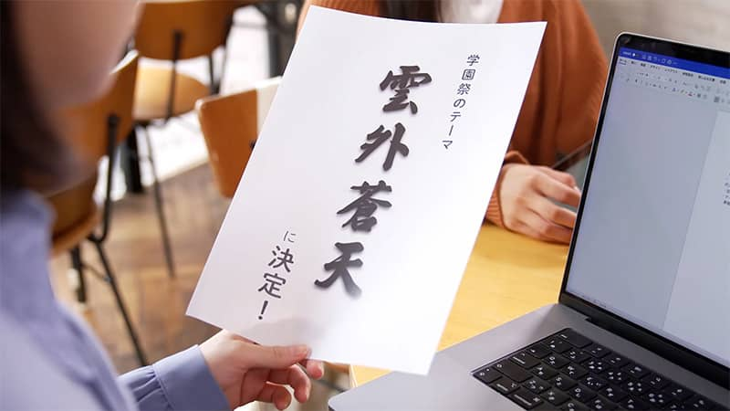
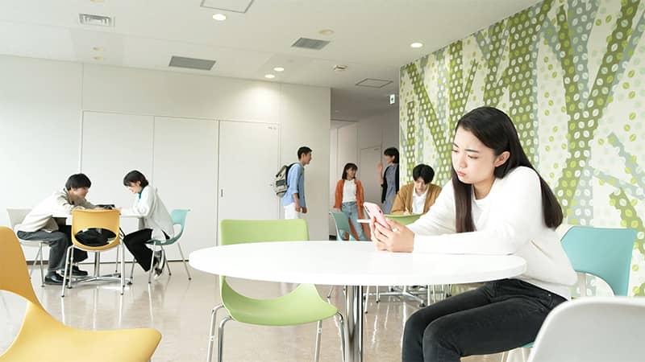

そもそも著作権とは
- 著作物
- 著作者
- 公正な利用
- 著作者の権利の保護
映画など違法ダウンロードが禁止されているもの、オープンソースのような誰でもダウンロードできるもの、その違いが知りたくなった3人は先生の元へ向かいます。

著作物を公衆に送信する権利
- 著作財産権
- 公衆送信権
- 送信可能化権
香澄が作成した動画をSNSで公開しようとするも「著作権違反に当たる」と言われて驚く直哉。著作権にはどのような権利があるのでしょうか？
著作者が持つ人格的な権利
- 著作者人格権
- 公表権
- 氏名表示権
- 同一性保持権
- みなし著作者人格権
香澄さんが創った動画を、勝手に改変してしまった葵。悪気のなさはわかりつつも、モヤモヤしてしまう香澄。その原因は動画への思い入れを否定されように感じたからかも？

著作物の保護期間と利用の仕方
- 保護期間
- 権利制限規定
- 利用許諾
オープンキャンパスで学科紹介ビデオを制作することになった涼太。授業での著作権の特別な扱いを理解しながら、内田先生からもらった資料の権利関係を整理していく。

学校教育にかかわりの深い特別なルール
- 著作権法35条
- 権利制限規定
- 授業目的公衆送信補償金
授業のときに先生が使ったり配ったりする資料、学生たちがゼミのときに配布している資料などには、他の人が作った著作物が含まれている。このような、教育の場での他の人の著作物の利用について、どう考えたらいいのか、ルールはどうなっているのか考えてゆく。
SNSで著作権侵害？
- 複製権
- 公衆送信権
- SNS
- 罰則
- 親告罪
香澄のキャラ弁をSNSにアップしようとする葵。キャラ弁にも著作権が関係することを知って…
利用規約を読みましょう
- フリー素材
- ライセンス
- 商用利用
フリー素材を使って軽音部のポスターを作った葵。香澄はフリー素材を自由に使ってよいのか気になっているが...

引用について学ぶ
- 公表された著作物
- 主従関係
- 出所の明示
レポートに取り組む三人。レポートを見た先輩は「引用」方法が気になっている、引用にどんな問題が？
それってパクリですか？
- 類似性
- 著作物性
- 画風
- 著作権侵害
SNSで市のポスターのイラストがパクリという投稿を見つけた葵と直哉だが、香澄は首を傾げている。
有罪？損害賠償？著作権が侵害されたとき
- 刑事裁判
- 刑事罰
- 親告罪
- 民事裁判
- 差し止め
- 損害賠償
- 著作者人格権
- 名誉回復
映画館での著作権侵害の警告や損害賠償の記事など侵害行為への対応に疑問を持った葵、香澄が内田先生に質問します。

ステージイベントと著作権
- JASRAC
- 非営利
- 著作者人格権
- eスポーツ
学園祭実行委員の打ち合わせで、先輩からステージイベントの著作権処理について尋ねられた三人。入場無料の教育機関でのイベントでも著作権処理が必要？
- 
どこまで似ていて大丈夫？学園祭のポスター
- 利用許諾
- 本質的特徴の直接感得性
- 翻案
学園祭のポスター作りに取り組む三人。あの漫画のキャラクターを使うのはさすがに無理でも小道具や衣装だけなら大丈夫？
著作隣接権に注意！ 音楽イベント動画のアップロード
- 著作隣接権
- JASRAC
- YouTube
学園祭の動画を動画共有サイトにア��ップロードしようとしている香澄と葵。軽音楽部とダンス部で同じ音楽を使っているのに…？

その権利、譲渡しちゃって大丈夫？
- 権利の譲渡
- 著作財産権
��とっておきのにゃんこ映像でコンクールに応募しようとする直哉。入賞賞金に目が眩んでいるようだけれど、入賞した際の映像の著作権については確認していないようで…
私の作品、この範囲なら使っていいですよ！ 利用許諾とライセンス設定
- 利用許諾
- クリエイティブ・コモンズ・ライセンス
オリジナルイラストを一般公開しようとする葵。イラストを意図通りに使ってもらうために、クリエイティブ・コモンズ・ライセンスや利用規約を書くメリットなどを学びます。

類似性の難しさ
- 類似性
- 依拠性
- 設定
- アイディア
香澄が小説投稿サイトで公開しているものとよく似た作品を見つけた直哉だが、香澄は困惑するとともに迷っているようでもある。
著作権と似ているけど違う権利 知的財産権
- 知的財産権
- 無方式主義
- 特許権
- 実用新案権
- 育成者権
- 意匠権
- 商標権
著作権以外にも人の考えだしたものを守る仕組みが存在する。車のデザインの話題をきっかけに、それらを学びます。

海外の著作物の利用
- ベルヌ条約
- 著作権保護期間
- 戦時加算
海外の歌詞をサイトで使いたい直哉と香澄。ベルヌ条約や戦時加算について内田先生に学びます。
- 
二次的著作物ってどんなもの？
- 二次的著作物
- 原著作物
- 翻案
葵の描いた漫画を小説にしたいと友達から言われ、香澄と直哉に相談する葵。使って良いとも思うけれど、どう使われてどう公開されるのかも気になって…

著作物が写り込んでしまったらどうしたらいいの？
- 写り込み
- 付随対象著作物
涼太は研究室紹介の動画作成のため、研究室での作業風景を撮影し、その動画を編集する中で研究室に掲示されていたポスターが写り込んでいたことに気が付いた。このまま公開しても問題ないのだろうか…
私的使用のための複製ってどういうこと？
- 複製
- 私的使用のための複製
定期試験が近いので一緒に勉強をすることに。葵は専門科目でわからないところがあると言っていたので、直哉が自宅にあった書籍の一部をコピーして渡したところ、香澄から著作権侵害ではないかとの指摘を受けた…

AIが学んでAIが作り出す？ 生成AIと著作権
- 生成AI
- AIの学習
- 類似性
- 依拠性
直哉がイベント用にお絵かきAIを使って作成したイラストは、昔のCDジャケットに似ていた。こんなときどうしたらいいだろう。生成AIが既存の画像を学習して絵を作り出す仕組みと著作権との関係を、どう考えたらいいだろう？

出演俳優からみた著作権（インタビュー集）
- インタビュー
- クリエイティブ・コモンズ・ライセンス
主演5名の俳優さんに、本作出演での経験を踏まえ、インタビューしました。今後役立ちそうな著作権の知識、クリエイティブ・コモンズ・ライセンスでの本教材の提供、その他著作権に関わるさまざまな考えを伺います。
出演俳優からのおすすめとメッセージ
- インタビュー
- おすすめ
- メッセージ
主演5名の俳優さんに、本作におけるおすすめポイ��ントと、メッセージを伺いました。